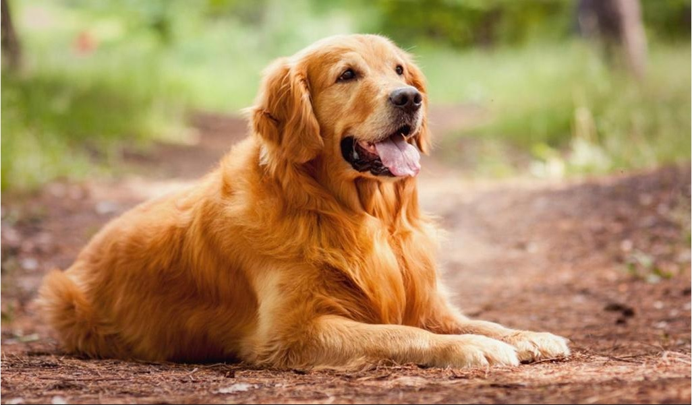
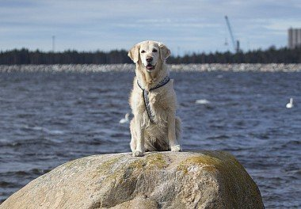
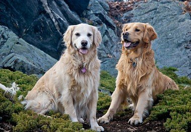
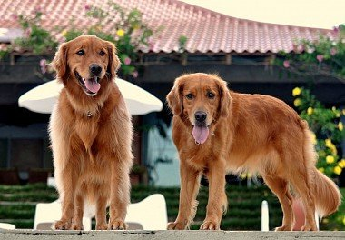

Золотистый ретривер
Краткая информация
- Название породы: Золотистый ретривер
- Страна происхождения: Великобритания
- Время зарождения породы: XIX век
- Вес: кобели 26-41 кг, суки 25-37 кг
- Рост (высота в холке): кобели 56-61 см, суки 51-56 см
- Продолжительность жизни: 12 – 13 лет
Основные моменты
Идеальные хозяева для золотистого ретривера – семьи с детьми, а также активные люди, любящие вылазки на природу и длительные прогулки. Домоседам и приверженцам расслабленного темпа жизни собака будет доставлять больше неудобств, чем позитивных эмоций.
Представители этой породы достаточно молчаливы и терпеливы. Не поднимают шума по пустякам и не досаждают громким лаем.
Собаки умны и сообразительны. Занимают 4 место в списке самых интеллектуально-развитых пород по Стэнли Корену.
Среди охотников золотистые ретриверы пользуются репутацией лучших «носильщиков» дичи, способных пробираться в поисках добычи даже сквозь труднопроходимые заросли.
Из-за обильной стихийной линьки порода не подойдет фанатам стерильной чистоты и аллергикам.
Голден-ретриверы – способные ученики, легко схватывающие даже самый сложный материал. При своевременно пройденном курсе дрессировки из них вырастают отличные поводыри, спасатели и поисковики.
Несмотря на дружелюбный и коммуникабельный характер, ретриверы нуждаются в воспитании и твердой руке. Собака, не признающая хозяйского авторитета, становится неуправляемой и может создать массу проблем.
Золотистые ретриверы испытывают настоящую страсть к воде и с удовольствием принимают ванны в любом открытом водоеме, а при недосмотре – и в лужах.
Хозяева часто называют своих питомцев просто голденами – от английского «golden».
Внешность голден-ретривера
Золотистые ретриверы – в меру подкачанные красавцы с проникновенным взглядом и роскошной переливчатой шерстью. Своей узнаваемостью голдены обязаны даже не столько собственному обаянию, сколько стараниям маркетологов. Особенно активно породу пиарил американский кинематограф. Достаточно посмотреть пару-тройку комедийных мелодрам производства США, чтобы понять: если американская семья и решится когда-нибудь завести собаку, то в 9 случаях из 10 это будет голден-ретривер.
Половой тип у представителей этой породы выражен ярко. Рост среднестатистического мальчика колеблется в пределах 56-60 см, а его вес может достигать 41 кг. Девочки значительно легче (средний вес – 25-37 кг) и миниатюрнее кобелей (рост – 51-56 см).
Невзирая на наличие единого породного стандарта, утвержденного FCI, специалисты подразделяют золотистых ретриверов на три типа:
- английский
- американский
- канадский
Представители первой группы – это уроженцы Туманного Альбиона, имеющие чрезвычайно массивные лапы и широкий череп. Отличаются более светлым окрасом шерсти, вплоть до белого. Именно английский тип наиболее распространен в Европе и России. Комплекция подопечных американских бридеров менее впечатляющая, зато голден-ретриверы «made in USA» могут похвастаться изящной осанкой и в целом более элегантным видом. При этом оттенок шерсти у них несколько темнее, чем у британских собратьев. Отличительная особенность канадских ретриверов – худощавое телосложение при достаточно высоком росте. Окрас шерсти у «канадцев» еще более насыщенный и темный, чем у «американцев».
  